Photography In Victorian India
یہ اصل میں کوئی باقاعدہ ضخیم کتاب نہیں بلکہ ایک لیکچر ہے جو رے ڈیسمنڈ نے 14 مئی 1985 کو سوسائٹی کے سامنے دیا تھا، اور بعد میں 1985 ہی میں اسے جرنل آف دی رائل سوسائٹی آف آرٹس میں شائع کیا گیا۔
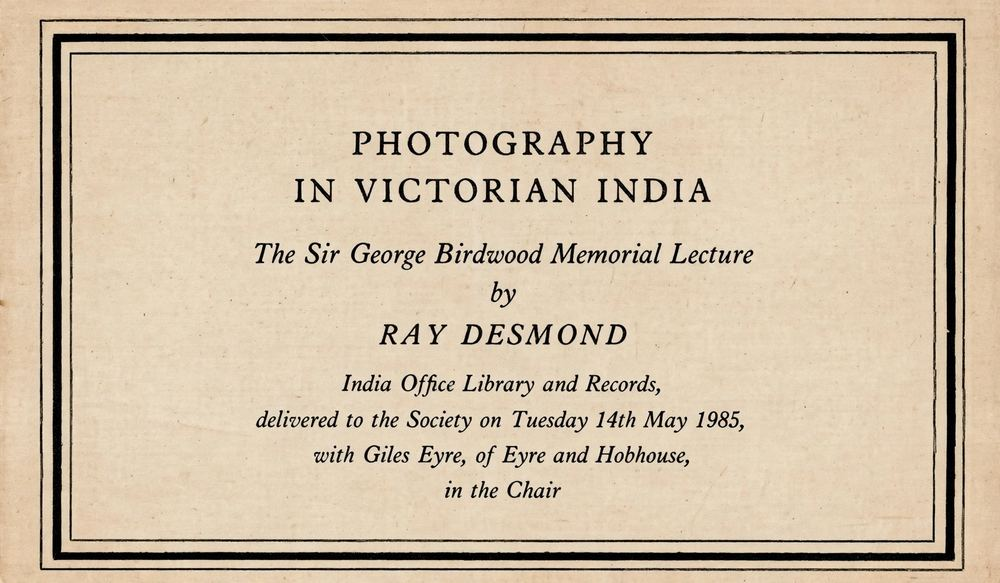
1
PHOTOGRAPHY IN VICTORIAN INDIA. The Sir George Birdwood Memorial Lecture by RAY DESMOND. India Office Library and Records, delivered to the Society on Tuesday 14th May 1985, with Giles Eyre, of Eyre and Hobhouse, in the Chair
وکٹورین ہندوستان میں فوٹوگرافی۔ سر جارج برڈ ووڈ یادگاری لیکچر از رے ڈیسمنڈ، انڈیا آفس لائبریری اینڈ ریکارڈز، منگل 14 مئی 1985 کو دیا گیا۔
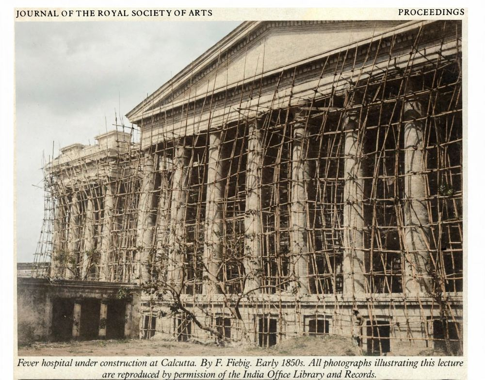
2
Fever hospital under construction at Calcutta. By F. Fiebig. Early 1850s. All photographs illustrating this lecture are reproduced by permission of the India Office Library and Records.
کلکتہ میں زیر تعمیر بخار کا ہسپتال، از ایف فیبگ، 1850 کی دہائی کے اوائل۔
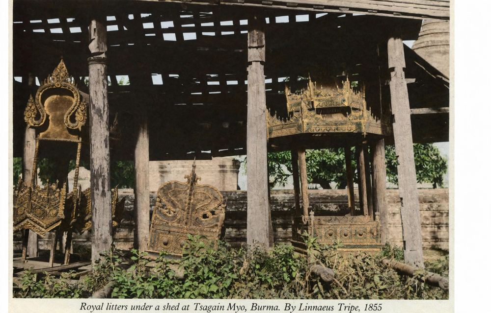
3
Royal litters under a shed at Tsagain Myo, Burma. By Linnaeus Tripe, 1855
برما کے تساگین میو میں چھپر کے نیچے شاہی پالکیاں، از لینائیس ٹرائپ، 1855۔
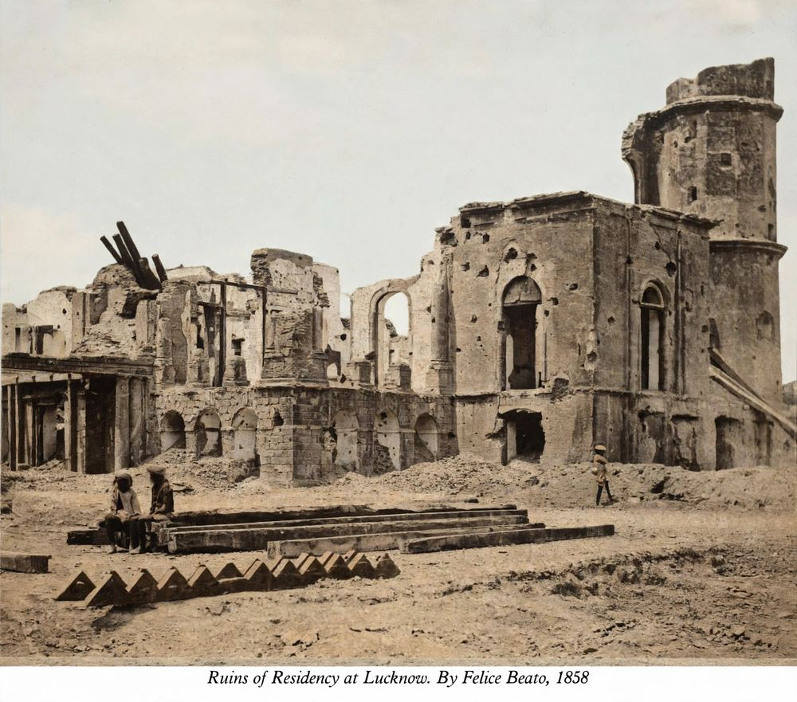
4
Ruins of Residency at Lucknow. By Felice Beato, 1858
لکھنؤ میں ریذیڈنسی کے کھنڈر، از فیلیس بیاٹو، 1858۔
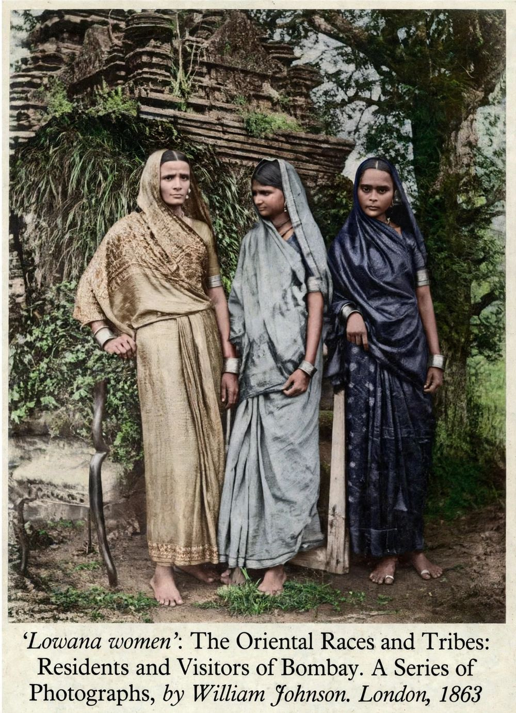
5
‘Lowana women’: The Oriental Races and Tribes: Residents and Visitors of Bombay. A Series of Photographs, by William Johnson. London, 1863
لووانا عورتیں، بمبئی کے باشندوں اور مہمانوں کی تصاویر کا سلسلہ از ولیم جانسن، لندن 1863۔
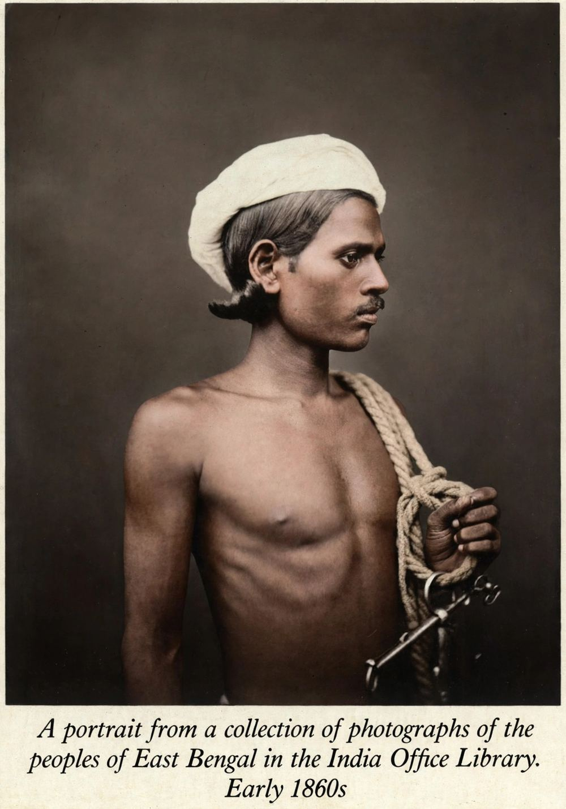
6
A portrait from a collection of photographs of the peoples of East Bengal in the India Office Library. Early 1860s
انڈیا آفس لائبریری میں مشرقی بنگال کے لوگوں کی تصاویر کے مجموعے سے ایک تصویر، 1860 کی دہائی کے اوائل۔
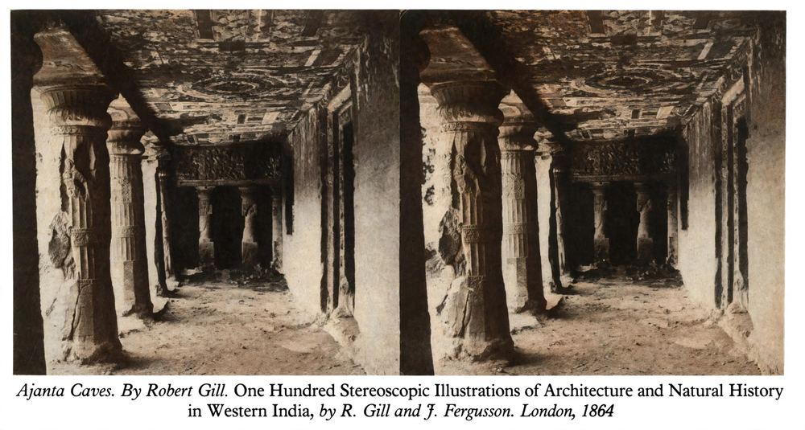
7
Ajanta Caves. By Robert Gill. One Hundred Stereoscopic Illustrations of Architecture and Natural History in Western India, by R. Gill and J. Fergusson. London, 1864
اجنتا کے غار، از رابرٹ گل، مغربی ہندوستان کی تعمیرات اور قدرتی تاریخ کی سٹیریوسکوپک تصاویر، لندن 1864۔
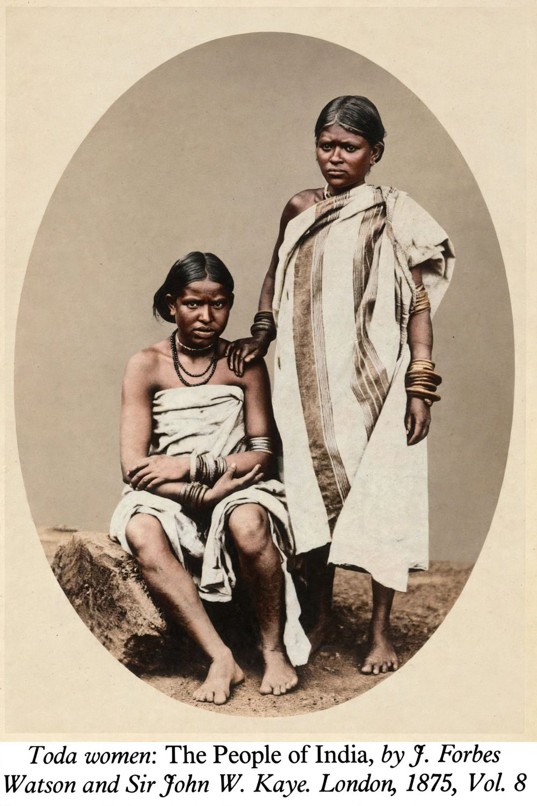
8
Toda women: The People of India, by J. Forbes Watson and Sir John W. Kaye. London, 1875, Vol. 8
ٹوڈا عورتیں، دی پیپل آف انڈیا از جے فوربس واٹسن اور سر جان ڈبلیو کے، لندن 1875، جلد 8۔
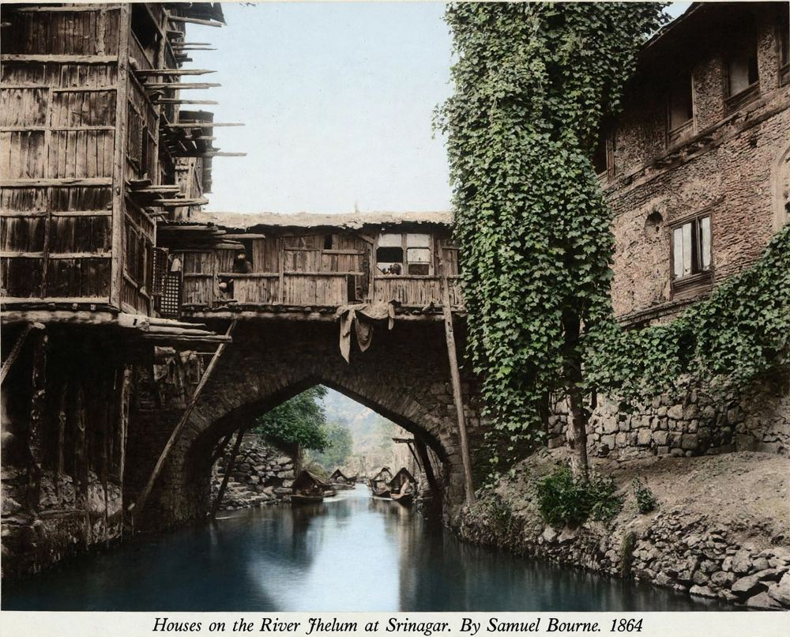
9
Houses on the River Jhelum at Srinagar. By Samuel Bourne. 1864
سرینگر میں دریائے جہلم پر مکانات، از سیموئل بورن، 1864۔
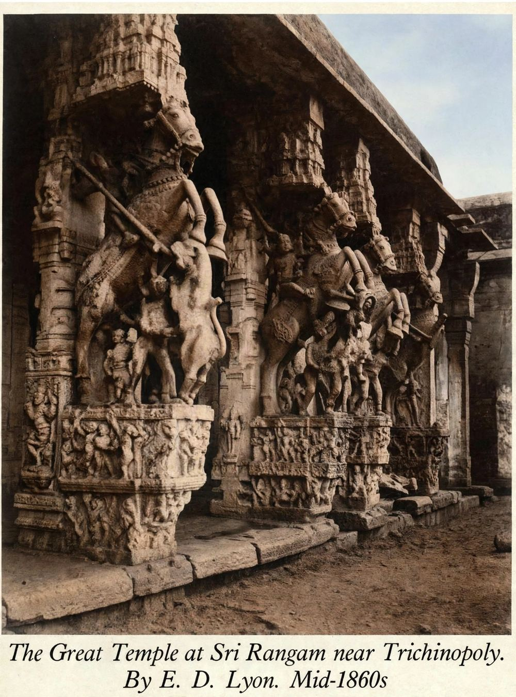
10
The Great Temple at Sri Rangam near Trichinopoly. By E. D. Lyon. Mid-1860s
ترچناپلی کے قریب سری رنگم کا عظیم مندر، از ای ڈی لائن، 1860 کی دہائی کے وسط۔
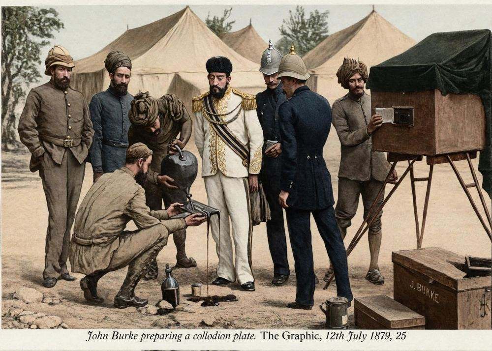
11
John Burke preparing a collodion plate. The Graphic, 12th July 1879, 25
جان برک کولاڈین پلیٹ تیار کر رہا ہے، دی گرافک، 12 جولائی 1879۔
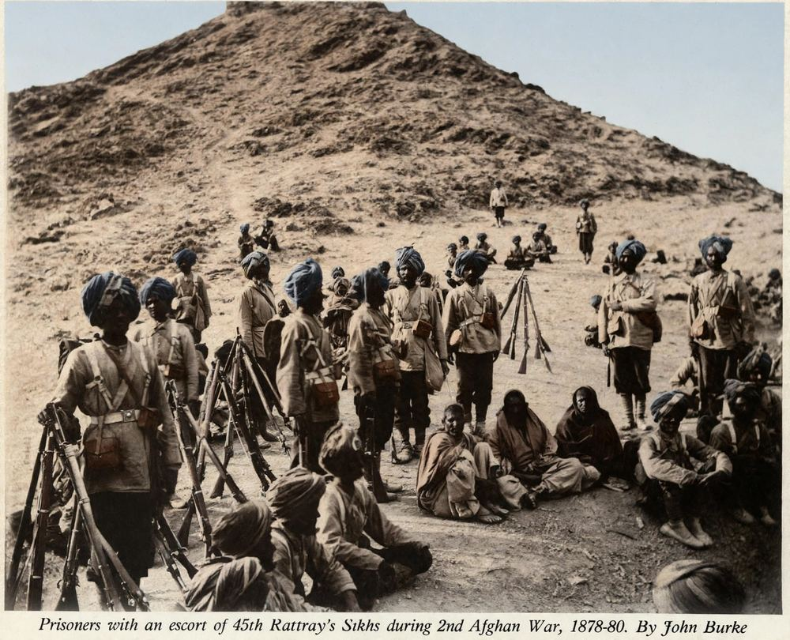
12
Prisoners with an escort of 45th Rattray's Sikhs during 2nd Afghan War, 1878-80. By John Burke
دوسری افغان جنگ 1878-80 کے دوران 45ویں رٹرے کے سکھوں کے پہرے میں قیدی، از جان برک۔
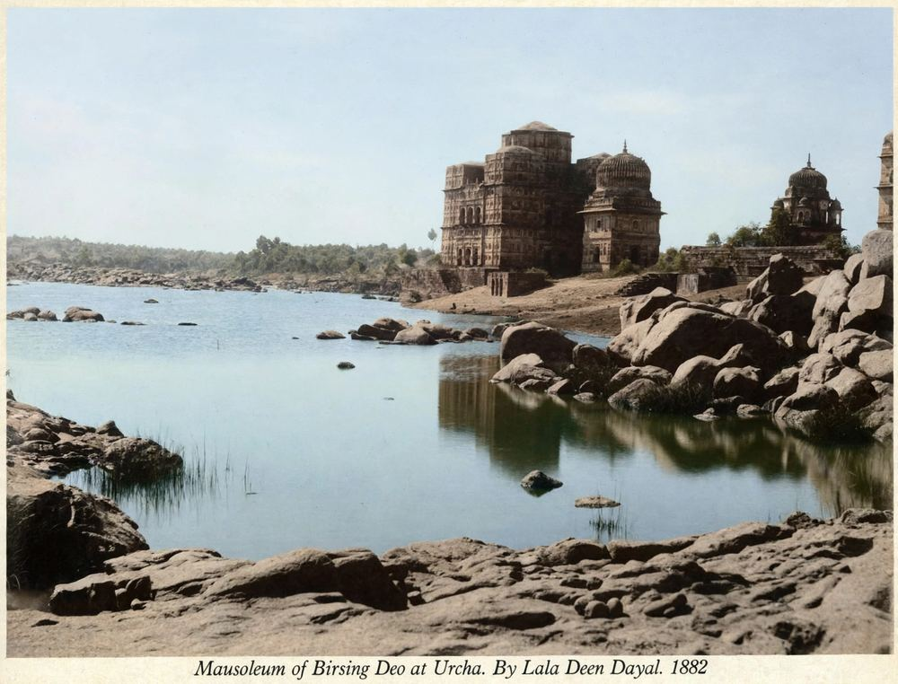
13
Mausoleum of Birsing Deo at Urcha. By Lala Deen Dayal. 1882
ارچھا میں بیر سنگھ دیو کا مقبرہ، از لالا دین دیال، 1882۔